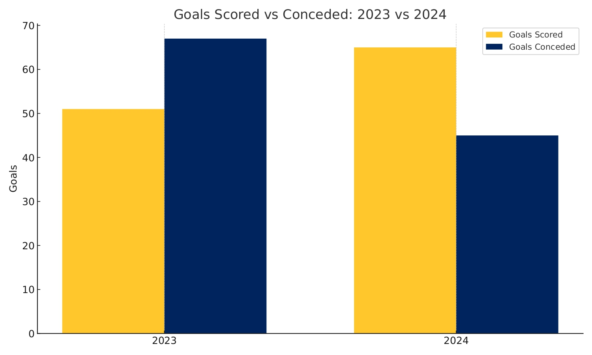
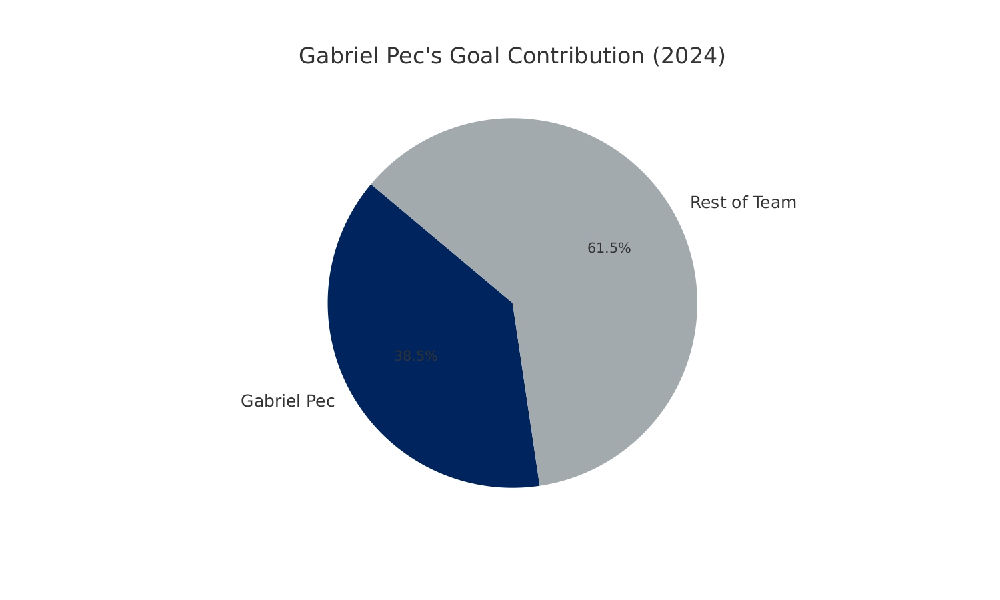

From Bottom to Glory: LA Galaxy’s 1-Year Turnaround from 13th to Champions
By Gaby Campos| June 01, 2025
In 2023, the LA Galaxy found themselves in a familiar but undesirable position: struggling near the bottom of the Western Conference. A historic franchise with five MLS Cups to its name, the Galaxy’s finish in 13th place was more than disappointing-it was a clear sign of a club drifting without clear direction. Just a year later, however, that narrative flipped completely. In 2024, the Galaxy not only climbed back into playoff contention-they won the MLS Cup. This rapid transformation, from mediocrity to dominance, wasn’t accidental. It was the result of strategic changes at multiple levels of the club, each supported by underlying data and thoughtful execution.
The 2023 campaign was marked by inconsistency and imbalance. While the Galaxy managed to create scoring opportunities, their inability to convert chances-reflected in a modest 41.2 expected goals (xG)-and their failure to prevent goals (conceding an xGA of 57.5 and allowing 67 actual goals) exposed structural issues. The team lacked defensive discipline, often looked disjointed in attack, and failed to adapt tactically to opponents. Despite flashes of individual brilliance, particularly from Riqui Puig, the team rarely posed a cohesive threat. The 1.03 points per game average told the story of a squad stuck in transition.
There was a sense of frustration surrounding the club. LA Galaxy supporters, who are used to their team competing for trophies, watched a season unfold that offered little in terms of growth or hope. The gaps between midfield and defense were exploited regularly by opponents. Attacks broke down in the final third, with a lack of chemistry between forwards and midfielders. Substitutions often came too late or failed to change the pace of the game. What made matters worse was the lack of clarity in the team’s tactical identity. It wasn’t just that they lost; it was how they lost-frequently outplayed, outworked, and outthought.

One of the catalysts for that change was Gabriel Pec, whose signing during the offseason proved to be a masterstroke. Named MLS Newcomer of the Year, Pec quickly became the focal point of the Galaxy attack. With pace, intelligence, and a keen eye for goal, he contributed decisively in both goals and assists. But what made Pec truly special wasn’t just the box score-it was his ability to stretch defenses, create width, and open central lanes for teammates. His vertical runs disrupted defensive shapes, and his pressing from the front became a key element in the team’s reenergized system. Pec added the kind of versatility and unpredictability the Galaxy lacked in 2023. In a league where finding the right Designated Player can shift an entire team’s fortunes, Pec was exactly the kind of signing that balanced individual talent with team-first mentality.
Yet the turnaround wasn’t just about Pec. Behind the scenes, a new general manager, Will Kuntz, brought a sense of vision that had been missing. The organization began prioritizing data and analytics in roster construction and game planning. Recruitment was no longer just about star power-it was about fitting players into a tactical philosophy. This shift in approach fostered a clearer footballing identity centered around high pressing, transitional fluidity, and organized buildup. The coaching staff was empowered to innovate tactically, using varied formations and in-game adjustments that kept opponents off balance.
Visually, the differences between 2023 and 2024 stand out. In 2023, the team often lost midfield battles and gave up high-quality chances. In 2024, defensive reinforcements brought stability, and the goalkeeper position-an area of weakness-became a strength. The Galaxy’s ability to limit opponents' xG meant that even when they conceded shots, they were less dangerous. Meanwhile, attacking patterns became more varied and sophisticated, emphasizing quick passing combinations, third-man runs, and better spacing. Set pieces also improved, contributing directly to multiple goals throughout the season.
The synergy between new and returning players was palpable. Veterans like Riqui Puig, who struggled to carry the team in 2023, thrived in a system that better complemented his skill set. With Pec drawing attention on the wings, Puig had more freedom to operate centrally and dictate tempo. The team’s improved spacing and movement made it easier for him to find passing lanes, and for forwards to make timed runs behind defenses.
 From a narrative perspective, this Galaxy revival echoes the kind of turnaround rarely seen in MLS. In a league built on parity, where fortunes can change rapidly, the Galaxy’s bounce-back is proof that sustained investment in vision, structure, and detail still wins championships. The 2024 MLS Cup win wasn’t the result of one marquee signing or one lucky run of form. It was the culmination of months of intentional planning, collective buy-in, and a redefined identity that every player embraced.
The question now is whether LA Galaxy can sustain this success. The real challenge in MLS is not just winning-it’s staying relevant in a league where the margins are razor thin and success is fleeting. But regardless of what happens next season, the 2024 campaign will stand as a blueprint for what’s possible when leadership aligns with ambition and execution. In the Galaxy’s case, a dark chapter in 2023 became the launching point for one of the most memorable comebacks in recent MLS history.
- Sources
- MLS Official Stats (mlssoccer.com): https://www.mlssoccer.com/stats/
- FBref: https://fbref.com/en/squads/681b03c4/LA-Galaxy-Stats
- WhoScored: https://www.whoscored.com/
- LA Galaxy Official Site https://www.lagalaxy.com/
- Transfermarkt https://www.transfermarkt.us/la-galaxy/startseite/verein/220